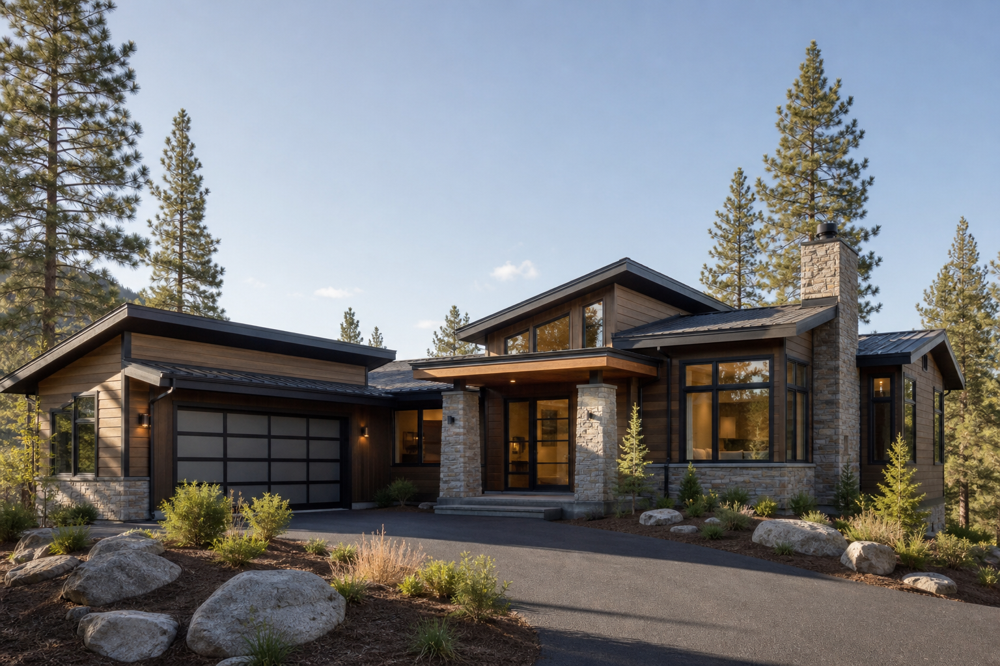

Project template
Branscum Residence
Placeholder project page for a future residential structural engineering case study.

Placeholder image generated for layout planning.
Replace this paragraph with a concise description of the structural scope, project context, and the specific engineering challenges that are appropriate to share publicly.
Add detail about framing systems, foundation relationships, coordination requirements, constructability considerations, or other technical themes once the final project language is ready.
Project details should be reviewed for client confidentiality requirements before publication.
Replace this note with any required attribution or prior-firm language before publishing.